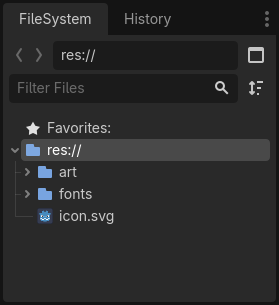

Setting up the project
In this short first part, we'll set up and organize the project.
Launch Godot and create a new project.

When creating the new project, you only need to choose a valid Project Path. You can leave the other default settings alone.
Download dodge_the_creeps_2d_assets.zip.
The archive contains the images and sounds you'll be using
to make the game. Extract the archive and move the art/
and fonts/ directories to your project's directory.
Download dodge_the_creeps_2d_assets.zip.
The archive contains the images and sounds you'll be using
to make the game. Extract the archive and move the art/
and fonts/ directories to your project's directory.
Ensure that you have the required dependencies to use C# in Godot. You need the latest stable .NET SDK, and an editor such as VS Code. See Prerequisites.
The C++ part of this tutorial wasn't rewritten for the new GDExtension system yet.
Your project folder should look like this.

This game is designed for portrait mode, so we need to adjust the size of the
game window. Click on Project -> Project Settings to open the project settings
window, in the left column open the Display -> Window tab. There, set
"Viewport Width" to 480 and "Viewport Height" to 720. You can see the
"Project" menu on the upper left corner.

Also, under the Stretch options, set Mode to canvas_items and Aspect to keep.
This ensures that the game scales consistently on different sized screens.

Organizing the project
In this project, we will make 3 independent scenes: Player, Mob, and
HUD, which we will combine into the game's Main scene.
In a larger project, it might be useful to create folders to hold the various
scenes and their scripts, but for this relatively small game, you can save your
scenes and scripts in the project's root folder, identified by res://. You
can see your project folders in the FileSystem dock in the lower left corner:

With the project in place, we're ready to design the player scene in the next lesson.